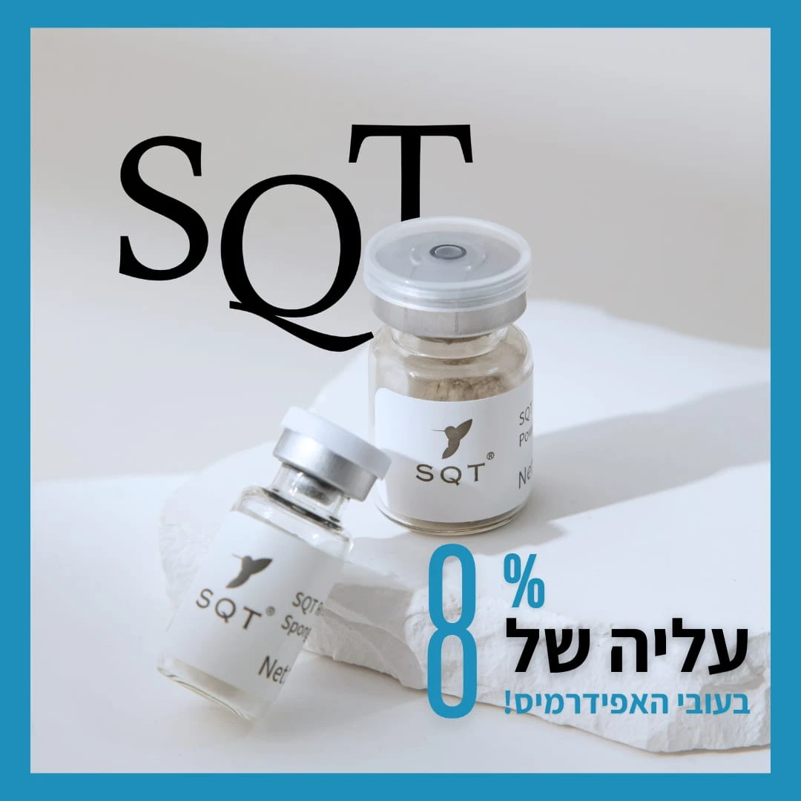
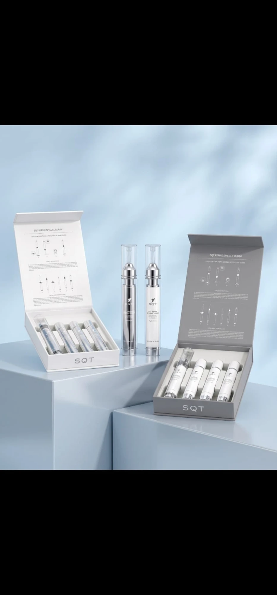

קליניקה לטיפולי פנים, לייזר ופדיקור טיפולי
העור לא מתנהג לפי גיל.
הטיפול נבחר לפי מטרה.
אקנה, צלקות, כתמים, נפילת עור, יובש. כל ביקור מתחיל באבחון קצר, ומהמטרה נגזרים הטיפול, החומרים ותוכנית הבית.

מה מטריד אותך בעור?
בחירת המטרה מראה אילו טיפולים בקליניקה נותנים לה מענה. ההתאמה הסופית נעשית באבחון.
אקנה פעילה
- פלזמה קרה נלחמת בפתוגנים על העור ומרגיעה דלקת בלי חום.
- פילינג חכם בריכוז חומצות של 20% עד 60%, לפי חומרת המצב.
- אקסוזומים להאצת ריפוי ולהפחתת אדמומיות אחרי הטיפול.
צלקות פוסט-אקנה
- מיקרונידלינג להחדרת חומרים פעילים ולעידוד ייצור קולגן בצלקת.
- ביו-מיקרונידלינג SQT מחטים ננו-ביולוגיות שמחדשות את שכבת האפידרמיס.
- אקסוזומים בשילוב עם מחטים, לשיפור מרקם ועומק הצלקת.
כתמי פיגמנטציה
- פילינג חכם בפרוטוקול הבהרה, בריכוז שנקבע לפי סוג הכתם וגוון העור.
- מיקרונידלינג עם חומרים מבהירים שמוחדרים ישירות לשכבה הפגועה.
- הגנה ותחזוקה עם מוצרי בית מהחנות, בלעדיהם הכתמים חוזרים.
קמטים ואובדן מתיחות
- פלזמה חמה אידוי נקודתי של העור למתיחת פנים ללא ניתוח.
- טיפולי אנטי-אייג'ינג שילוב של פילינג, החדרת חומרים ואקסוזומים.
- ביו-מיקרונידלינג SQT לעיבוי האפידרמיס ולעור מלא יותר.
חיטוב פנים וצוואר
- אולטרסאונד מטפל בשרירי הפנים בשלוש שכבות עד לשריר התחתון, מגיע ל-SMAS.
- המסת שומן וחיטוב צוואר באותה טכנולוגיה, בסדרת טיפולים.
- פלזמה חמה להשלמת מתיחה באזורים ממוקדים.
מרקם עור ונקבוביות
- פילינג חכם בריכוז נמוך, כטיפול תחזוקה חוזר.
- מיקרונידלינג לצמצום נקבוביות ולהחלקת המרקם.
- ביו-מיקרונידלינג SQT לזוהר ולעובי עור בריא.
טיפולי פנים
כל טיפול מתחיל בניקוי ואבחון. הטכנולוגיה נבחרת לפי המטרה, והחומרים המוחדרים לפי סוג העור. רוב הטיפולים ניתנים כסדרה, עם מרווח של שבועיים עד ארבעה שבועות.
קביעת אבחון- אקנה
- ניקוי עמוק, פלזמה קרה ופילינג חכם להרגעת דלקת והפחתת התפרצויות.
- צלקות פוסט-אקנה
- מיקרונידלינג ואקסוזומים לשיקום מרקם העור באזורי הצלקת.
- פלזמה קרה
- נלחמת בפתוגנים על פני העור בלי חום, מתאימה לעור דלקתי ורגיש.
- אנטי-אייג'ינג
- פרוטוקול משולב לקמטים, אובדן נפח ומתיחות.
- פלזמה חמה
- אידוי העור למתיחת פנים ללא ניתוח: עפעפיים, קמטי הבעה, קווי צוואר.
- אולטרסאונד
- מטפל בשרירי הפנים בשלוש שכבות עד לשריר התחתון ומגיע ל-SMAS. ממיס שומן ומחטב את הצוואר.
- כתמי פיגמנטציה
- הבהרה הדרגתית בפילינג, החדרת חומרים ותוכנית הגנה לבית.
- פילינגים חכמים
- חומצות בריכוז 20% עד 60%, ריכוז ועומק שנקבעים לפי העור והמטרה.
- ביו-מיקרונידלינג
- החדרת מחטים ננו-ביולוגיות (SQT) לעור, לפי מטרה טיפולית.
- מיקרונידלינג
- החדרת חומרים פעילים דרך תעלות זעירות בעור, לעידוד קולגן וספיגה עמוקה.
- אקסוזומים
- שיקום, הרגעה והאצת ריפוי. מותאם לפי מטרת הטיפול ומשולב עם מחטים.
הסרת שיער בלייזר
לכל אזורי הגוף, לנשים ולגברים. המכשיר מכויל לגוון העור, כך שגם עור כהה מאוד מטופל בבטחה וביעילות.
קביעת טיפול ניסיוןלפני הסדרה נעשה טיפול ניסיון על אזור קטן כדי לקבוע את העוצמה המתאימה לעור שלך.
פדיקור טיפולי
טיפול רפואי-קוסמטי בכף הרגל, לא פדיקור יופי. כל הכלים חד-פעמיים או מעוקרים, והחומרים מותאמים גם לסוכרתיים.
קביעת תור- יבלות
- הסרה מבוקרת של יבלות ועיבוי עור, כולל טיפול בגורם הלחץ שיצר אותן.
- פטריות
- ניקוי הציפורן והחדרת חומרים אנטי-פטרייתיים, עם הנחיות לתחזוקה בבית.
- ציפורניים חודרניות
- שחרור הציפורן, ובמידת הצורך שילוב מגנט BS שמושך את הציפורן לצמיחה בריאה.
- מותאם לסוכרתיים
- חומרים עדינים, ללא חומצות אגרסיביות, ובדיקת עור ותחושה לפני כל טיפול.
חנות מוצרי טיפוח
אותם מוצרים שאנחנו עובדים איתם בקליניקה, להמשך הטיפול בבית. אפשר להזמין כאן ולאסוף, או לקבל משלוח.
-
SQT ביו-מיקרונידלינג, אבקה
מחטים ננו-ביולוגיות לחידוש האפידרמיס. לשימוש בקליניקה.
₪ 000הזמנה בוואטסאפ -

SQT Refine Spicule Serum
סרום ספיקולים לשימוש ביתי בין הטיפולים, ערכה עם ארבע מילויים.
₪ 000הזמנה בוואטסאפ
משלוח עד הבית בכל הארץ. איסוף מהקליניקה ללא עלות.
איך נראה ביקור ראשון
-
אבחון
עשרים דקות של שיחה ובדיקת עור. מה המטרה, מה ניסית עד היום, אילו תרופות ומה הרגישויות.
-
תוכנית
סדרת טיפולים עם מספר מפגשים ומחיר ידועים מראש. בלי הפתעות באמצע.
-
טיפול
הטיפול הראשון ניתן בעוצמה נמוכה יותר כדי לראות איך העור מגיב.
-
בית
מוצרים מהחנות והנחיות כתובות. חצי מהתוצאה נעשית בין הביקורים.
שאלות שחוזרות
אפשר לעשות לייזר על עור כהה?
כן. המכשיר מכויל לגוון העור ומטפל בבטחה גם בעור כהה מאוד. לפני הסדרה נעשה טיפול ניסיון על אזור קטן.
אני סוכרתי, מותר לי פדיקור טיפולי?
כן, וזה אפילו מומלץ. אנחנו עובדים עם חומרים המותאמים לסוכרתיים, בודקים תחושה וזרימת דם לפני הטיפול, ולא משתמשים בחומצות אגרסיביות.
מה ההבדל בין מיקרונידלינג לביו-מיקרונידלינג?
במיקרונידלינג קלאסי מחטים מתכתיות פותחות תעלות זעירות בעור להחדרת חומרים. בביו-מיקרונידלינג (SQT) מוחדרות מחטים ננו-ביולוגיות שנספגות בעור ומעוררות חידוש של האפידרמיס, בלי מכשיר.
כמה זמן העור אדום אחרי פילינג חכם?
תלוי בריכוז. ב-20% האדמומיות חולפת תוך שעות. ב-60% ייתכן קילוף של שלושה עד חמישה ימים, ומתכננים אותו מראש.
איך מזמינים מוצרים מהחנות?
לוחצים על "הזמנה בוואטסאפ" ליד המוצר. אנחנו מאשרים זמינות, מקבלים תשלום בביט או באשראי, ושולחים או מכינים לאיסוף.
קביעת תור
כותבים מה המטרה, ואנחנו חוזרים עם מועד לאבחון. אפשר גם ישירות בוואטסאפ או בטלפון.
- 050-000-0000
- וואטסאפ
- אינסטגרם
- רחוב, עיר
- ראשון עד חמישי 9:00–19:00